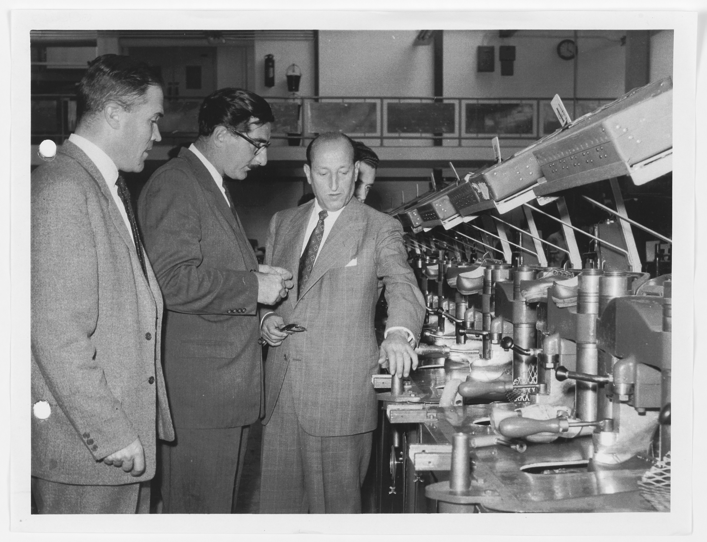
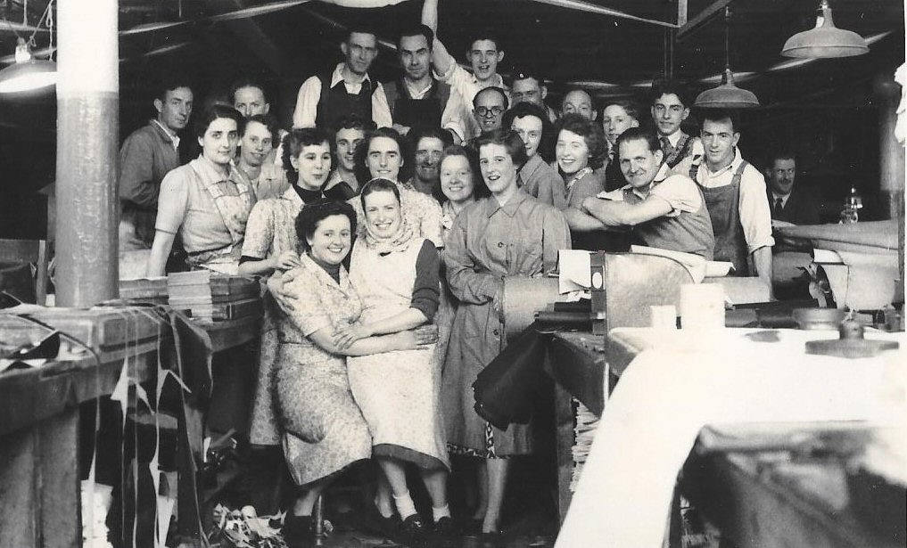
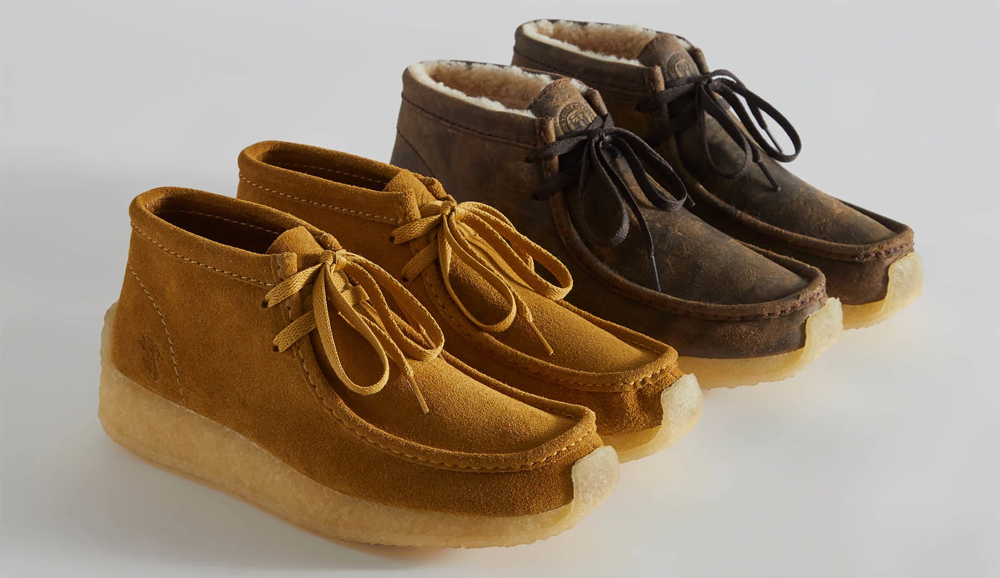
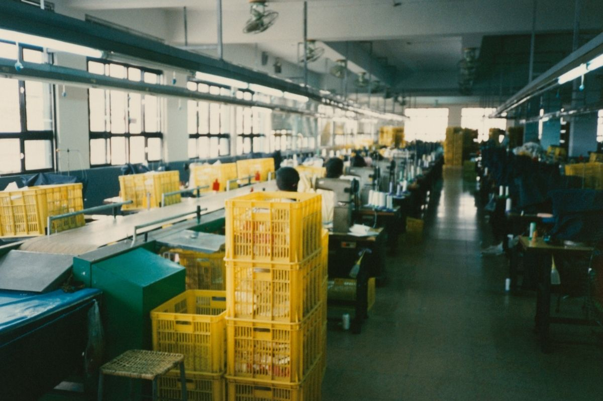

Founded in 1825, Clerks has been
a leader in footwear design
and
craftsmanship for nearly two
centuries. From humble
beginnings
in Street, Somerset, our family-owned
company
has grown into a global brand
renowned for quality, comfort,
and
innovation.
With nearly two centuries of history,
Clerks has established itself as a
leader in footwear craftsmanship. From
our humble beginnings in Street,
Somerset, we have grown into a global
brand trusted by millions. Our
commitment to quality and innovation
has remained constant throughout
generations.


Every pair of Clerks shoes is
meticulously crafted with attention
to detail and precision. Our skilled
artisans combine traditional techniques
with modern technology to create
footwear that stands the test of time.
We believe in using only the finest
materials and innovative construction
methods.
At Clerks, we are committed to
sustainable practices and continuous
innovation in our manufacturing
processes. We invest in research and
development to create products that
are environmentally responsible. Our
dedication to innovation drives us to
explore new materials and techniques
that benefit both our customers and
the planet.

Clerks serves customers across the
globe, with a presence in over 100
countries. Our diverse product range
caters to men, women, and children
of all ages, offering styles for every
occasion. We are proud to be part of
communities worldwide, and we remain
dedicated to providing exceptional
footwear and customer service.